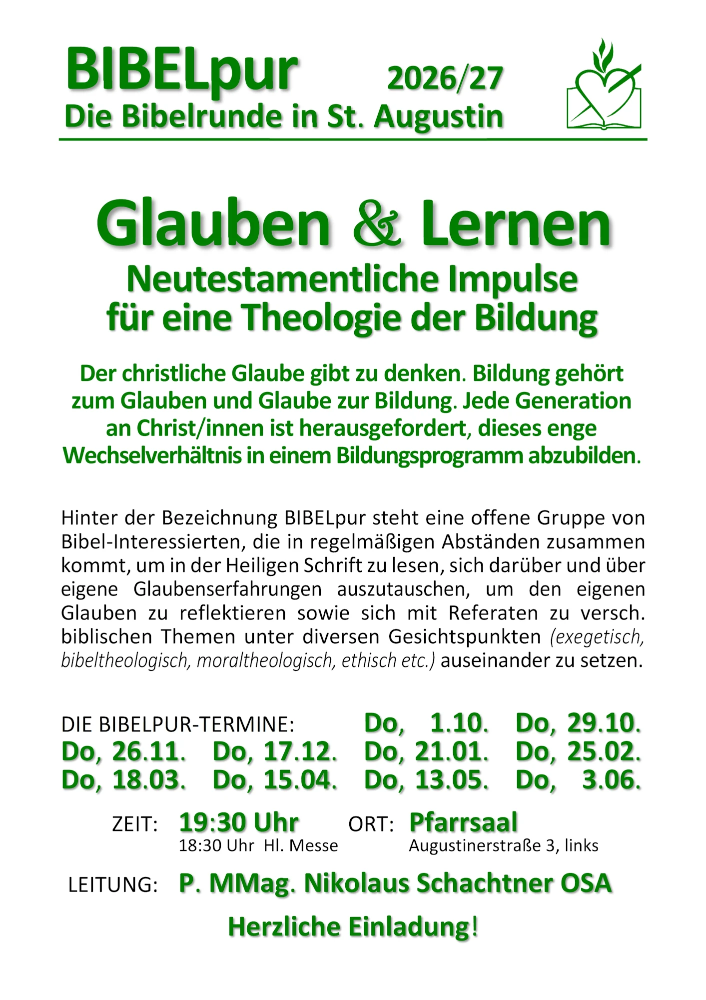

Pfarre St. Augustin
Gottesdienste
Die Liturgie in St. Augustin folgt dem Rhythmus der Woche und des Kirchenjahres — vom stillen Werktagsgebet bis zum Sonntags-Hochamt mit Chor und Orchester.
Ganzjährig
Heilige Messe & Hochamt
| Sonntag | 11:00 | Hochamt mit Chor, Solisten & Orchester Augustinerkirche |
| Sonntag | 18:30 | Heilige Messe Augustinerkirche |
| Dienstag | 18:30 | Heilige Messe Augustinerkirche |
| Donnerstag | 18:30 | Heilige Messe Augustinerkirche |
| Freitag | 08:00 | Heilige Messe September bis Juni, nicht in den Ferien |
| Samstag | 18:30 | Vorabendmesse September bis Juni, nicht in den Ferien |
„Wenn ihr Gott mit Psalmen und Hymnen anbetet, soll im Herzen leben, was die Stimme ausspricht.“Augustinus, Regel 2,3
Runden in St. Augustin
Gemeinschaft in St. Augustin: Gruppen und Angebote für jedes Alter, von den Ministranten bis zu den Senioren.

Augustiner-Fußwallfahrt
Jährliche Fußwallfahrt nach Mariazell auf den Spuren der Augustiner.

BIBELpur
Die Bibelrunde in St. Augustin.

Chor von St. Augustin
Vokalensemble der Hochämter — Proben jeden Mittwoch.

Fensterblick
Runde für Menschen in der Lebensmitte.

Glaube konkret
Gesprächsrunde zu Glaubensfragen des Alltags.

Ministranten
Dienst am Altar für Buben und junge Männer.

Ökumenekreis Innere Stadt
Ökumenischer Austausch in der Inneren Stadt.

Senioren in St. Augustin
Seniorennachmittage und Ausflüge.
„Singe, aber geh weiter! Tröste dich in der Mühe mit Gesang und liebe nicht die Trägheit. Singe und geh weiter.“Augustinus, Predigt 256,3
Wer singt, betet doppelt.
Hl. Augustinus